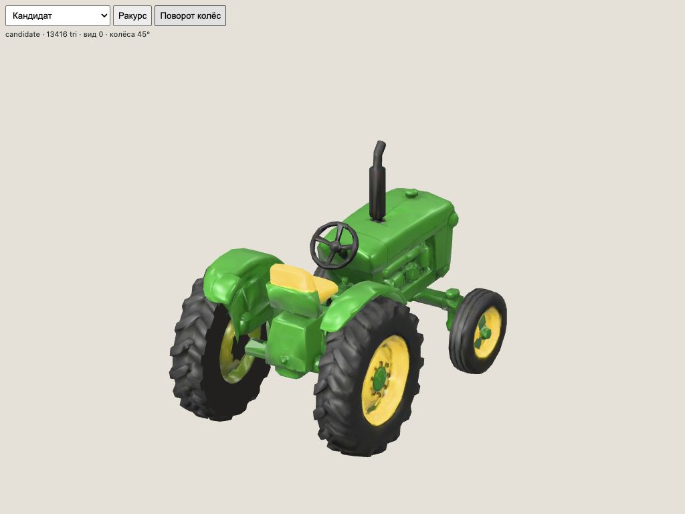
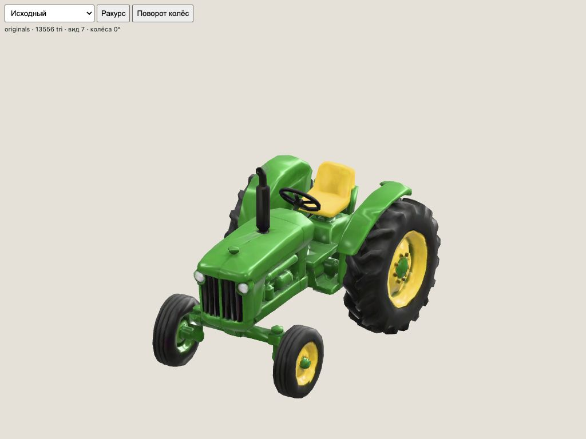
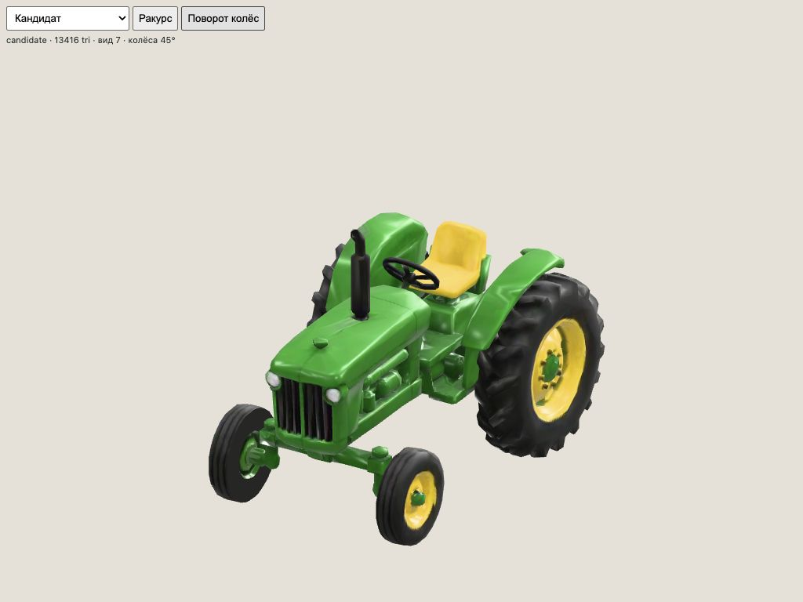
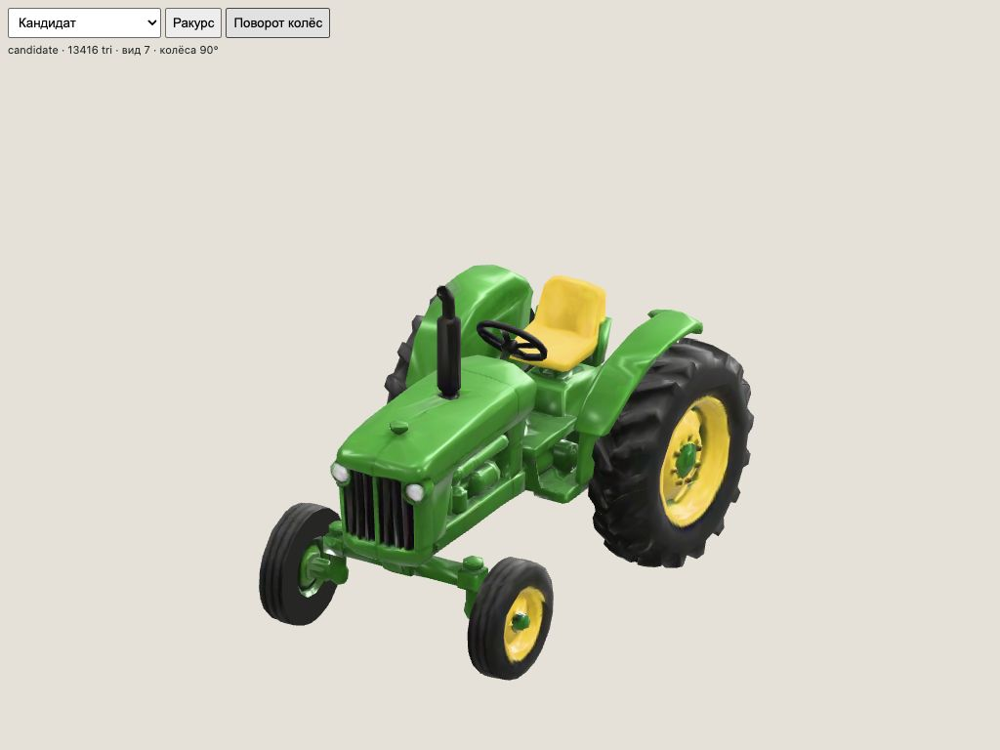
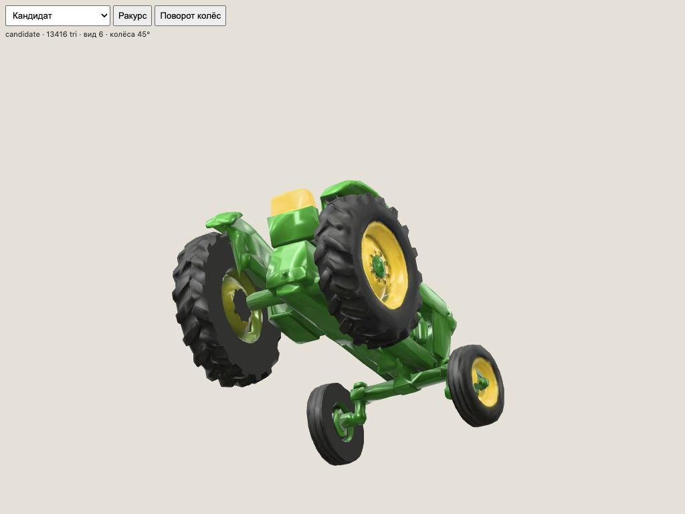
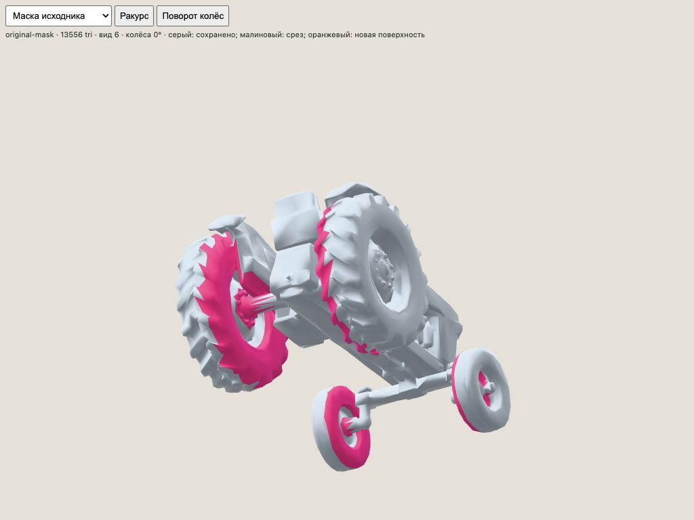
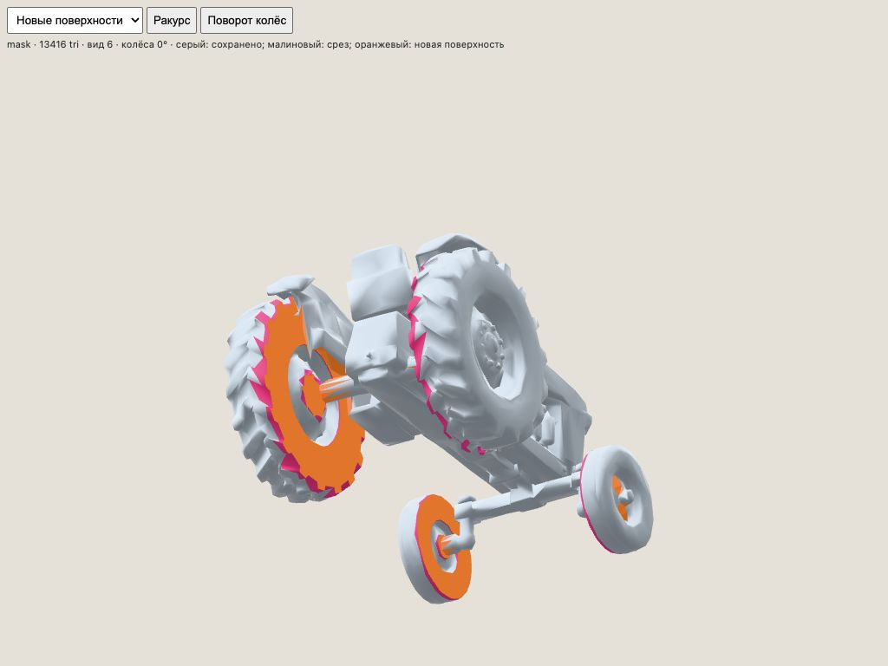
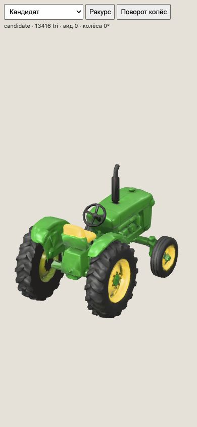
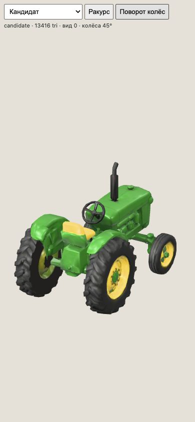

13 416 треугольников · четыре закрытых колеса · полный оборот без пересечений с корпусом.
Цель 8 000 не достигнута. Внутренние стенки реконструированы плоскими. Публичная модель не заменена.
Интерактивный просмотр · Отчёт · GLB-кандидат








